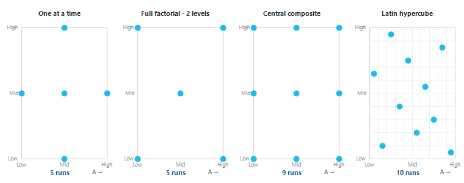
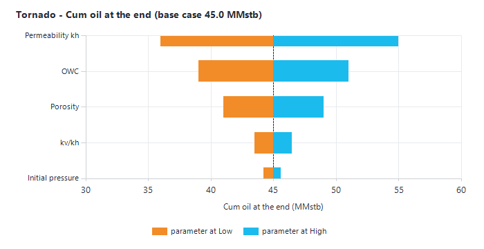

|
Experimental design and probabilistic simulation studies
1. Overview — what experimental design is, and when to use it
A reservoir model always rests on uncertain inputs: porosity, permeability, contacts, initial pressure, fault transmissibility, and so on. Experimental design answers two questions with as few simulation runs as possible:
•Which uncertain parameters actually matter? Usually only a few out of many drive the result.
•How much do they move the result — for example the cumulative oil at the end of the forecast, or the quality of the history match?
Instead of sampling the parameters at random, experimental design varies them in a planned way, at fixed levels (Low / Mid / High), so that each parameter's effect can be read directly from a small number of runs. This matters when one simulation run takes hours on a cluster. It is used both for history matching (which parameters drive the mismatch, and which combinations match best) and for forecasting (which uncertainties drive the forecast, and their range).
The studies are part of the 3D model builder (see Simulation deck builder). Choose one in the "Study" list, under "Model", at the top left:
|
Study
|
What it does
|
Typical use
|
|
Deterministic
|
One case, no uncertain parameter.
|
Base case, routine forecast.
|
|
Probabilistic
|
N realizations sampled at random from each parameter's distribution (Monte Carlo).
|
P90 / P50 / P10 forecasts when runs are cheap (section 7).
|
|
Experimental design
|
One run per design point, the parameters at their Low / Mid / High levels.
|
Screening, tornado charts, history matching, response surfaces when runs are expensive.
|
Both kinds of model work: with a "Conceptual model" Precept builds every run's deck; with an "Existing model" (for example from Petrel) Precept writes copies of your own deck with the run's values in place, for you to run on your cluster.
2. Defining the uncertain parameters
In a Deterministic study there are no uncertain parameters: choose "Probabilistic" or "Experimental design" first.
2.1 Conceptual model
Right-click one of these fields and choose "Make uncertain / edit…": in GRID, "Porosity", "Permeability kh (mD)" and "kv/kh ratio"; in SOLUTION, the initial pressure and the GOC and OWC contacts. An uncertain field gets a light blue background.
2.2 Existing model
The right pane shows your own deck (.DATA). You can edit it directly (Ctrl+S saves; the original is kept once as <deck>.DATA.bak).
•Right-click a value of a keyword record — for example the initial pressure or a contact in EQUIL, a fault multiplier in MULTFLT — and choose "Make uncertain: <name> (<value>)...". Precept remembers the value by what it is, not by its line: the keyword, which occurrence of it, which record (by its name when the record starts with one, such as a fault or a well) and the parameter column (the ECLIPSE item number). Adding lines elsewhere, or typing over the value itself, does not lose it. A repeated value such as 27260*20 can be made uncertain too.
•Right-click an array property line — PORO, PERMX, PERMY, PERMZ, NTG, MULTX, MULTY, MULTZ, MULTX-, MULTY-, MULTZ-, MULTPV — or the INCLUDE line of the file holding it, and choose "Make uncertain: <PROP> multiplier..." (default levels 0.8 / 1.0 / 1.2). Each run applies it with a MULTIPLY keyword at the end of the GRID section. A multiplier on PERMX does not carry over to PERMY if your deck copies one into the other: make each one uncertain separately if needed.
•Values inside an included file: double-click the INCLUDE line to open the file, then right-click the value. The file must be included directly by the deck, not from another included file.
•An uncertain value already defined shows "Edit uncertainty: <name>...". Elsewhere in the deck the menu offers "Include a file here..." (for example VFP tables).
•Uncertain values are shown in bold Precept blue in the deck.
2.3 Low, Mid and High
In an experimental design the dialog is "Levels - <name>", with three levels (proposed by default at Mid ±30 %):
•"Low" — the low end of the range you want to test.
•"Mid (base)" — the base case.
•"High" — the high end of the range.
Low < Mid < High is required. "Save" keeps the levels, "Not uncertain" removes the parameter, "Cancel" closes. No distribution is needed — except for the Latin hypercube design (section 3), which spreads its runs over each parameter's distribution: Normal, unless it was set to Triangular in the Probabilistic study (where the dialog is "Uncertainty - <name>", with "Low (min)", "Mid (mode)", "High (max)" and "Distribution").
2.4 The UNCERTAINTIES section
"UNCERTAINTIES" (in the section list, outside the Deterministic study) shows "Uncertainties (n)": every uncertain parameter with a small chart of its levels ("Low x Mid y High z"). Click a chart to edit that parameter, or to make it "Not uncertain". The deck pane widens to half the window here, so you can pick values while you look at the charts.
3. Choosing the design
Choose the "Design" at the top of the UNCERTAINTIES section. Next to it Precept shows how many runs it will write for your k uncertain parameters ("n runs = n .DATA files"), and a note describes the design.
|
Design
|
Runs
|
What it gives
|
|
One at a time (tornado)
|
1 + 2k
|
A base run (all at Mid), then each parameter alone at Low and at High. Each parameter's own effect, exactly.
|
|
Plackett-Burman
|
The smallest of 4, 8, 12, 16, 20, 24, 32, 64, 128 (else 256) above k, + 1 centre run
|
Two-level screening with the fewest runs. Main effects only.
|
|
Full factorial - 2 levels
|
2^k + 1 centre run
|
Every Low / High combination: main effects and all interactions.
|
|
Full factorial - 3 levels
|
3^k
|
Every Low / Mid / High combination: curvature and interactions. Grows very fast.
|
|
Box-Behnken
|
2k(k−1) + 1
|
Three levels, parameters varied in pairs, never all at their extremes. Fits a quadratic response surface. Needs 3 parameters or more.
|
|
Central composite (face-centred)
|
2^k + 2k + 1
|
Two-level factorial, plus each parameter alone at Low / High, plus a centre run. Quadratic response surface, with every point inside the Low–High range.
|
|
Latin hypercube
|
Chosen in the "Runs" box (default 5 per parameter, 10 at least)
|
Runs spread evenly over each parameter's distribution: a space-filling design for proxy models. The levels are shown as percentiles (e.g. P37). The sampling is reproducible.
|

Figure 1 — Where the runs sit for two uncertain parameters (coded Low = −1, Mid = 0, High = +1) in four designs.
Designs needing more than 1,000 runs are refused ("too many runs (more than 1000)"). With many parameters, start with Plackett-Burman or One at a time to find the few that matter, then run a Box-Behnken, Central composite or Latin hypercube on those.
4. Writing the runs
Click the study's button at the bottom of the deck builder: "Experimental design" (conceptual model) or "Generate experimental design DATA files" (existing model). Precept confirms the design and the number of runs ("Write the n .DATA files?"), then writes them. Precept writes the runs; it does not run them — run them with OPM Flow or on your cluster, like any deck.
4.1 Conceptual model
The runs are written to <Simulation folder>\ed\run_001 … run_nnn, one deck each (with its own grid file for an isoclines grid), and ed\design.csv lists each run's values and levels. The previous design's run folders are deleted first. Values are kept within physical bounds.
4.2 Existing model
Your deck should already contain the forecast: generate it first in the Deterministic study with "Generate SCHEDULE and save DATA file" (Precept warns and asks before writing the runs if it does not). The runs go to the "Design folder" shown in the EXISTING MODEL section ("Browse..." to change it; by default the deck's folder). Your deck's include files are copied into it with the same relative paths.
|
File
|
Content
|
|
<deck>_ED001.DATA … <deck>_EDnnn.DATA
|
One deck per run: your deck with the run's values in place and the multipliers as a MULTIPLY block. Its header lists the run's values and levels.
|
|
<file>_ED001.<ext> …
|
When an uncertain value sits in an included file: one copy of that file per run. The run's deck includes its own copy. Your original files are never modified.
|
|
<deck>_ED_samples.csv
|
The design: each run's parameter values and levels.
|
Writing a new design deletes the previous design's run decks and include copies first (result files are kept). Before writing, Precept checks that every uncertain value can still be found in the deck and lists any that cannot.
5. Analysing the results — the DESIGN RESULTS section
5.1 Loading the results
Put the runs' result files back next to the design's decks (or in sub-folders), open "DESIGN RESULTS" (in the section list, Experimental design study) and click "Load results". Precept searches the design folder and its sub-folders — the Design folder for an existing model, <Simulation folder>\ed for a conceptual model — and matches each run to its summary:
•Existing model: <deck>_ED003.SMSPEC with its .UNSMRY (or the non-unified .S0001, .S0002 … files), written by ECLIPSE, OPM Flow or Intersect; otherwise <deck>_ED003.RSM.
•Conceptual model: the .SMSPEC or .RSM found in each run_nnn folder.
The status line shows how many runs were loaded, which ones have no result yet, and the best history match ("best history match: run X (Y %)"). The section hides the deck pane so the charts use the full width.
5.2 Profiles
The charts show every run over time, the measured history as dots, and a dashed line at the forecast start.
•Tick "Field" and / or wells: each gets its own chart.
•Tick one or more quantities: "Oil rate", "Water rate", "Gas rate", "Liquid rate", "Cum oil", "Cum water", "Cum gas", "Field pressure" (Field only), "BHP", "THP" (wells only), "Water cut", "GOR", "Water injection rate", "Gas injection rate". Pressures, water cut and GOR go on a second axis.
•Click a run in the table to draw it in bold. Drag on a chart to zoom ("Reset zoom" to undo).
The history comes from the asset's own production data (allocated production for rates, daily well parameters for BHP / THP). Well history is found by well name, so the simulation model must use the same well names as Precept.
5.3 Runs table
One row per run: "Run", "Status" ("loaded", "no result found", "empty summary"...), the history-match errors "HM total %", "HM oil %", "HM water %", "HM gas %", "HM BHP %", each parameter's value and level, and the result chosen for the tornado. A run without results is grey. Click a column header to sort: sorting on "HM total %" puts the best-matched runs first.
5.4 Tornado
The tornado shows how much each parameter moves the chosen result from its Low (orange, "parameter at Low") to its High (blue, "parameter at High"), around the base. The most influential parameter is at the top.
•Results available: "History-match error (%)", or "<quantity> at the end" for any field quantity (default "Cum oil at the end").
•How it is computed: one parameter at a time, the others at Mid, read from the response surface (section 5.6). The base is the surface with every parameter at Mid. A One-at-a-time design gives exactly its runs.
•When no surface can be fitted (fewer than 3 runs loaded, or a run without a value for the chosen result), each bar is the average result of the runs with the parameter at that level (its main effect), and the base is the average of all runs.

Figure 2 — Reading a tornado: each bar spans the result with the parameter at Low (orange) and at High (blue), the others at Mid. The longest bar matters most.
A tornado of the history-match error shows which parameters to tune in the history match. A tornado of cumulative oil at the end shows which uncertainties drive the forecast.
5.5 History-match error
For each run, over the history period (up to the scenario's forecast start), Precept compares the simulation with the measured data: each well's oil, water and gas rates with its allocated production, and its bottom-hole pressure with its measured BHP (days without a gauge reading are ignored). If no well has measured data for a rate, the field total is used.
•Simulated values are read at each measurement date, interpolating linearly between the run's time steps.
•Per quantity, pooled over all wells: HM error (%) = 100 × RMS(simulated − measured) ÷ mean |measured|.
•"HM total %": the average of the oil, water, gas and BHP errors that could be computed. The lower, the better.
•Points are not compared at a run's very first instant, nor while the model's well has no BHP; a quantity needs at least 3 compared points. A deck that starts on the forecast start has no history period, so its HM columns stay empty.
5.6 Response surface (proxy)
The "Response surface (proxy)" panel, next to the runs table, fits the runs' results as a function of the parameters, so you can explore values that were never simulated.
•Sliders: one per parameter, from the lowest to the highest value among the loaded runs, Mid in the middle.
•"Show the expected curve on the profiles" draws the expected profile at the slider settings as a thick line, for every quantity shown. Moving a slider ticks it.
•"Expected <result>: <value>": the tornado's result predicted at the slider settings, with the type of surface, the number of runs and its Q2.
•"Reset to Mid" puts the sliders back at Mid.
How it works: each parameter is coded Low = −1, Mid = 0, High = +1. At every time step a surface is fitted to the runs by least squares — "quadratic" (with cross terms) when there are enough runs, else "linear + squares", else "linear". The expected curve is a weighted combination of the simulated profiles, so it keeps the shapes the simulator produced. Q2 measures the fit of the tornado's result by leaving each run out in turn and predicting it from the others: 1 is perfect; a low Q2 means the surface should not be trusted and more runs (or another design) are needed. "Q2 n/a" means there are as many terms as runs.
6. Typical workflows
History matching
1.Make the candidate parameters uncertain, with wide Low / High ranges.
2.Run a Plackett-Burman or One at a time design and load the results.
3.Look at the tornado of the history-match error: keep the few parameters that matter, fix the others at Mid.
4.Run a Box-Behnken, Central composite or Latin hypercube on the parameters you kept, sort the runs by "HM total %" and check the best ones on the profiles, especially the well BHPs.
Forecast uncertainty
1.Run a design on the main uncertainties.
2.Look at the tornado of "Cum oil at the end" to rank them.
3.Use the spread of the runs' profiles as the range of outcomes.
7. The Probabilistic study
With "Probabilistic", each uncertain parameter has Low (min), Mid (mode) and High (max) and a distribution: "Normal" (centred on Mid, truncated to Low–High, with Low and High at about P1 and P99) or "Triangular".
•Conceptual model — "Run probabilistic" asks the "Number of realizations (each runs flow once):" (default 30, at least 3, at most 500), then runs them one after another with OPM Flow in <Simulation folder>\mc\real_nnn. The progress window has a Cancel button. The realizations are ranked by their final cumulative oil: P90 is saved as the Low case, P50 as the Mid case (and the forecast), P10 as the High case, with their oil and gas in place as 1P / 2P / 3P. The dashboard "Probabilistic forecast - N realizations" shows the rates, cumulatives, S-curves, water cut, GOR, pressure and injection, and a P90 / P50 / P10 summary of STOIIP, cumulative oil, recovery factor, OGIP and cumulative gas. "Prob dashboard" reopens it.
•Existing model — "Generate probabilistic DATA files" asks the "Number of realizations (one .DATA file each):" and writes <deck>_MC001.DATA … and <deck>_MC_samples.csv in the "Probabilistic folder", to run on your cluster.
8. Notes and limits
•Units: simulated rates and pressures are compared in the simulator's units, which must match the asset's units in Precept. Water cut is converted to % and GOR to Precept's GOR unit.
•Not yet available: P90 / P50 / P10 derived from the response surface, and weighting the history-match quantities differently.
|